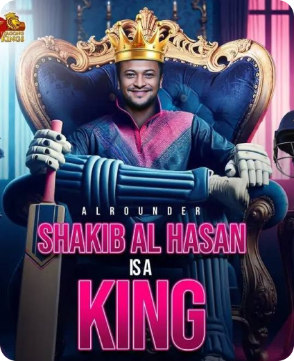

| BORN | 24 March 1987 · Magura, Bangladesh |
| ROLE | All-rounder |
| BATTING | Left-handed |
| BOWLING | Slow left-arm orthodox |
| DEBUT | ODI & T20I 2006 · Test 2007 |
Shakib Al Hasan grew up playing tape-ball cricket in Magura before rising through Bangladesh's age-group sides. He made his international debut in 2006 and quickly became the backbone of the national team in all three formats.
Equally capable of anchoring an innings and running through a batting line-up, he spent long stretches as the ICC's top-ranked ODI all-rounder, captained his country, and won franchise titles across the globe — including two IPL trophies.
Debuts in ODIs and T20Is against Zimbabwe, aged 19.
Earns his Test cap and features in Bangladesh's famous 2007 World Cup campaign.
Takes over the captaincy and becomes the face of Bangladesh cricket.
Lifts the IPL trophy with Kolkata Knight Riders — and again in 2014.
Simultaneously the ICC's top-ranked all-rounder in Tests, ODIs and T20Is.
606 runs and 11 wickets — among the greatest individual World Cups ever.
| test | Career |
| Matches | 70+ |
| runs | 4,600+ |
| Wickets | 240+ |
| 5-wicket hauls | 19+ |
| ODI | Career |
| Matches | 245+ |
| runs | 7,500+ |
| Wickets | 315+ |
| Centuries | 9 |
| T20I | Career |
| Matches | 125+ |
| runs | 4,600+ |
| Wickets | 240+ |
| Strike rate | ~ 122 |
Figures are approximate career totals for design purposes — verify against official ICC / ESPNcricinfo data before publishing.
Title winner with Kolkata Knight Riders in 2012 and 2014.

Long-time top-ranked ODI all-rounder in the ICC rankings.
Led Bangladesh across formats over multiple stints.

Rare ODI double reached by very few players in history.
Featured in franchise leagues across Asia, the Caribbean and beyond.
600+ runs and 10+ wickets in a single World Cup.



Interviews, brand partnerships, coaching clinics and events — reach out to the management team.